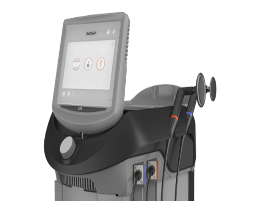

Platform 01 RF

448kHz
monopolar RF
monopolar RF
INDIBA CT9
Versatile radiofrequency for daily clinical use.
CT9 is a broad RF platform designed to sit inside the patient journey, from preparation and comfort support to active rehabilitation.
01Thermal + non-thermal modesAdjust the treatment experience to the clinical objective.
02Integrated workflowUse alongside manual therapy, exercise and movement.
03Broad utilizationRelevant across rehabilitation, sports and MSK care.
04Comfort-led careSupport a patient experience that feels controlled and explainable.